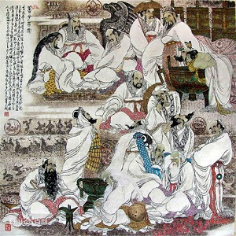
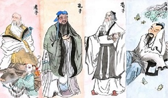
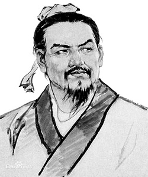
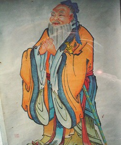
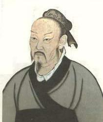
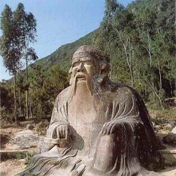
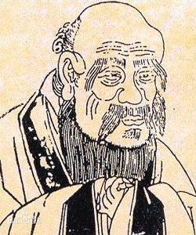
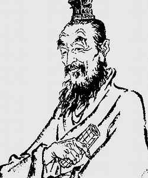

诸子百家
诸子百家，是对先秦时期各学术派别的总称。据《汉书·艺文志》的记载，数得上名字的一共有189家，4324篇著作。其后的《隋书·经籍志》《四库全书总目》等书则记载“诸子百家”实有上千家。但流传较广、影响较大、最为著名的不过几十家而已。归纳而言只有12家被发展成学派。 诸子百家之流传中最为广泛的是法家、道家、墨家、儒家、阴阳家、名家、杂家、农家、小说家、纵横家、兵家、医家。中国在古代创造了灿烂的文化艺术，具有鲜明的特色。中国有五千多年有文字可考的历史，文化典籍极其丰富。 在春秋战国时期，各种思想学术流派的成就，与同期古希腊文明相辉映；以孔子、老子、墨子为代表的三大哲学体系，形成诸子百家争鸣的繁荣局面。几经周折以孔子、孟子为代表的儒家思想在宋朝时期全面上位；同时，程度不同地影响其他少数民族，甚至影响到与中国相邻的国家。
释义
诸子指的是中国先秦时期管子、老子、孔子、庄子、墨子、孟子、荀子等学术思想的代表人物；百家指的是 诸子百家 诸子百家 儒家、道家、墨家、名家、法家等学术流派的代表家。诸子百家是后世对先秦学术思想人物和派别的总称。 春秋后期已出现颇有社会影响的法家、道家、儒家、墨家、阴阳家等不同学派，而至战国中期，许多学派纷呈，众多学说丰富多彩，为中国文化发展奠定了宽广的基础，中国术语上把这一时期称为诸子百家或百家争鸣时期。
解释：
1.诸子：以前为称呼，指孔子、老子、庄子、荀子、孟子、墨子、鬼谷子等。
2.百家：各个学派。
3.诸子百家有法家、儒家、道家、墨家等流派，后来对先秦学术思想派别的总称。
历史沿革
诸子百家谱系
【先秦时期】
文武道{顺天应人}微 周公王道{礼法}小、姜子牙{霸道}{兵法}大
【春秋战国】
管子、老子、孔子、晏子、孙子、范蠡、扁鹊、尹文、列子、庄子、田骈、黄老、杨子、邓析、公孙龙子、惠子、鬼谷子、张仪、苏秦、孙膑、庞涓、孟子、墨子、告子、商鞅、申不害、慎子、许行、邹衍、荀子、韩非子、吕不韦。
【汉】
司马迁、淮南子、董仲舒、王充。 “百家”按照“百家姓”的“姓”以“子”为称呼为代表的思想家。主要人物有孔子、孟子、墨子、荀子、老子、庄子、列子、韩非子、商鞅、申不害、许行、告子、杨子、公孙龙、惠子、孙武、孙膑、张仪、苏秦、田骈、慎子、尹文、邹衍、晏子、吕不韦、管子、鬼谷子等。诸子百家的许多思想给后代留下了深刻的启示。如儒家的“仁政”、鉴借儒家的"以义制利"精神。也鉴借墨家的"兼爱"、"尚贤"、"节用"；道家的“少私寡欲”、“道法自然”；法家的"废私立公"，等等思想。 诸子百家大辞典 诸子百家大辞典 “诸子”，是指这一时期思想领域内反映各阶层、阶层利益的思想家及著作，也是先秦至汉各种政治学派的总称，属春秋后才产生的私学。 春秋时代王室衰微，诸侯争霸，学者们便周游列国，为诸侯出谋划策，到战国时代形成了"百家争鸣"的局面。传统上关于百家的划分，最早源于司马迁的父亲司马谈。他在《论六家要旨》中，将百家首次划分为：“阴阳、儒、墨、名、法、道”等六家。后来，刘歆在《七略》中，又在司马谈划分的基础上，增“纵横、杂、农、小说”等为十家。班固在《汉书．艺文志》中袭刘歆，并认为：“诸子十家，其可观者九家而已。”后来，人们去“小说家”，将剩下的九家称为“九流”。自此，中国古代学术界都依从班固，百家就成了“九流”。今人吕思勉在《先秦学术概论》一书中再增“兵、医”，认为：“故论先秦学术，实可分为阴阳、儒、墨、名、法、道、纵横、杂、农、小说、兵、医十二家也。”
中国历史上，西周以前“学”在官府，东周以后“学”逐步走向民间。春秋战国时代，王权衰落，诸侯争霸，为了壮大自己的实力，各国开放政权以延揽人才，打破了本来的贵族政治体制，使得原本几乎没有资格参与政治的庶民可以发表自己的政见并参与政治决策，又因为人口的增加，土地分配困难，社会发生剧变。这一时期有思想的知识分子，面对现实的社会问题、人生问题等，提出了解决的办法和思想。个人利害与国家之间的利害交互运用，相互影响，标新立异。各种学说、思想纷纷出现。 西周灭亡，促使人们更多地转向对天下兴亡的思考，打破了ˇ庶人不议ˇ的观念，取而代之的是ˇ处士横议ˇ的活跃风气。在对人、事及社会的广泛探讨中，人们不再崇信ˇ天道ˇ，进而在如何统一天下、治理国家、教化民众等方面形成了各种不同的学派。这些学派的创立者和代表人物被合称为ˇ诸子ˇ，ˇ百家ˇ则指这些学派。最有影响的主要是儒家、墨家、道家和法家。 各学派的人物针对一些社会问题四处游说，推行自己的政治主张，或著书立说，人们的思想空前活跃，在中国文化史上形成了一个百家争鸣的空前繁荣的局面。诸子百家的学术观点反映在他们的文学作品中也随之形成了不同的学术和文学派别。诸子散文大都观点鲜明，言辞犀利，感情充沛，表达方式灵活多样，具有很强的感染力，所以诸子百家散文不仅具有重要的学术价值，同时也具有重要的文学价值。 从人类文明演化历史看，曾邦哲《结构论》提出诸子百家及三教九流是早期的学科分类体系，儒家、法家、兵家、纵横家等偏向政治军事与伦理领域，墨家、道家、名家、医家和农家等偏向自然工艺与逻辑等领域，还禅家、杂家、书画家等则偏向人文艺术等领域，并且，西方近代科学发展所需的一些因素在中华文化已经萌芽，比如，儒家的社会伦理化（科学社会规范）、墨家的实践经验化（实验技艺方法）、道家的思想澄清化（理论思维顿悟）和道家的系统逻辑模式（全息结构模型），以及一些技术发明的原型等。 诸子百家是对春秋战国时期各种学术派别的总称。
史家论述
西汉司马迁在《史记》中引述了司马谈（司马迁之父）对学术流派的见解，司马谈把先秦以来的学派总归纳为六家，即：阴阳家、儒家、墨家、法家、名家、道家。 东汉班固在《汉书》中则把先秦以来的学派归纳为十家，即：儒家、道家、阴阳家、法家、名家、墨家、纵横家、杂家、农家、小说家。 吕思勉认为“术数”、“方技”、“兵书”三略，亦可称为先秦诸子，可算为十二家。
各派介绍
法家
法家是战国时期的重要学派之一，因主张以法治国，“不别亲疏，不殊贵贱，一断于法”，故称之为法家。春秋时期，管仲、子产即是法家的先驱。战国初期，李悝、商鞅、申不害、慎到等开创了法家学派。至战国末期，韩非综合商鞅的“法”、慎到的“势”和申不害的“术”，以及法家思想学说之大成。
在中国传统法治文化中，齐国的法治思想独树一帜，被称为东方法家或齐法家。齐国是“功冠群公”的西周王朝 韩非子 韩非子 开国功臣姜太公的封国，姜太公的祖先伯夷辅佐虞舜，制礼作教，立法设刑，创立始礼法并用的制度。太公封齐，简礼从俗，法立令行，礼法并用成为齐国传承不废的治国之道。管仲辅佐齐桓公治齐，一方面将礼义廉耻作为维系国家的擎天之柱，张扬礼义廉耻道德教化的重要性;另一方面强调以法治国，君臣上下贵贱皆从法，成为中国历史上第一个提出以法治国的人。
至战国时期，齐国成为中国历史上第一次思想解放运动和百家争鸣的策源地，继承弘扬管仲思想的一批稷下先生形成了管仲学派。管仲学派兼重法教的法治思想成为先秦法家学派的最高成就。在稷下学宫“三为祭酒”、深受齐文化熏陶的荀子，还培养出韩非和李斯两位法家代表人物。先秦法家主要分为齐法家和秦晋法家两大阵营。秦晋法家主张不别亲疏，不殊贵贱，一断于法；齐法家主张以法治国，法教兼重；秦晋法家奉法、术、势为至尊与圭臬，齐法家既重术、势，又重法、教。
春秋战国时期，法家思想作为一种主要派系，他们提出了至今仍然影响深远的以法治国的主张和观念，这就足以见得他们对法制的高度重视，以及把法律视为一种有利于社会统治的强制性工具，这些体现法制建设的思想，一直被沿用至今，成为中央集权者稳定社会动荡的主要统治手段。当代中国法律的诞生就是受到法家思想的影响，法家思想对于一个国家的政治、文化、道德方面的约束还是很强的，对现代法制的影响也很深远。
这一学派，经济上主张废井田，重农抑商、奖励耕战；政治上主张废分封，设郡县，君主专制，仗势用术，以严刑峻法进行统治；思想和教育方面，则主张以法为教，以吏为师。其学说为君主专制的大一统王朝的建立，提供了理论根据和行动方略。法家主张“以法治国”，而且提出了一整套的理论和方法。这为后来建立的中央集权的秦朝提供了有效的理论依据，后来的汉朝继承了秦朝的集权体制以及法律体制，成为中国古代封建社会的政治与法制主体。
法家重视法律，反对儒家的“礼”，反对贵族垄断经济和政治利益的世袭特权，要求土地私有和按功劳与才干授予官职。法律的作用就是“定分止争”，也就是明确物件的所有权。“兴功惧暴”，鼓励人们立战功，而使那些不法之徒感到恐惧，兴功的最终目的是为了富国强兵，取得兼并战争的胜利。法家反对保守的复古思想，主张锐意改革。他们认为历史是向前发展的，一切的法律和制度都要随历史的发展而发展，既不能复古倒退，也不能因循守旧提出“不法古，不循今”的主张。韩非则集法家大乘，提出“时移而治不易者乱”，把守旧的儒家讽刺为守株待兔的愚蠢之人。
《汉书·艺文志》著录法家著作有二百十七篇，今存近半，其中最重要的是《商君书》和《韩非子》。《隋书·经籍志》列出的法家经典有《管子》十九卷、《商君书》五卷、《申子》三卷、《慎子》十卷、《韩非子》二十卷、、《新书》三卷、《正论》六卷、《法论》十卷、《政论》五卷、《阮子正论》、《世要论》十二卷、《陈子要言》十四卷、《蔡司徒难论》五卷。
儒家
代表人物：孔子、孟子、荀子。作品：《论语》、《孟子》、《荀子》
儒家是战国时期重要的学派之一，它以春秋时孔子为师，以六艺为法，崇尚“礼乐”和“仁义”，提倡“忠恕”和不偏不倚的“中庸”之道，主张“德治”和“仁政”，重视道德伦理教育和人的自身修养的一个学术派别。
儒家强调教育的功能，认为重教化、轻刑罚是国家安定、人民富裕幸福的必由之路。主张“有教无类”，对统治者和被统治者都应该进行教育，使全国上下都成为道德高尚的人。在政治上，还主张以礼治国，以德服人，呼吁恢复“周礼”，并认为“周礼”是实现理想政治的理想大道。至战国时，儒家分有八派，重要的有孟子和荀子两派。
孟子的思想主要是“民贵君轻”，提倡统治者实行“仁政”，在对人性的论述上，他认为人性本善，提出“性善论 ”，与荀子的“性恶论”截然不同，荀子之所以提出人性本恶，也是战国时期社会矛盾更加尖锐的表现。
代表人物：孔子、孟子、荀卿、董仲舒、二程、朱熹、王守仁。
孔子
孔子，名丘，字仲尼，鲁国陬邑（今山东曲阜）人，祖籍宋国栗（今河南商丘市夏邑县）。据史记所说，他生于鲁襄公二十二年（公元前551年），卒于鲁哀公十六年（公元前479年），年七十三。他是儒家的始创人物，被后世尊为“万世师表”，也被称为“圣人”。
孔子周游列国，先后到了卫、陈、蔡、楚、宋等国，宣扬其政治抱负，但皆不得要领。孔子不能伸展自己的抱负，心灰意冷，遂返回鲁国，是为鲁哀公十一年，孔子已六十八岁。自此以后，他潜心讲学和著书，在此其间与弟子重新编订了《五经》和撰写《春秋》，为的是要记载春秋时代所发生的大事，阐发儒家的价值观。
其一生主要贡献在于，奠定了教育的基础，他在政治上采取保守主义，主张恢复西周礼乐制度；但在教育上倡导“因材施教”“有教无类”这些开明的启发式教育方法，以及他对于思想领域的开创性见解间接的促进了春秋战国时期“诸子百家”这一文化鼎盛现象的形成。五年后，孔子去世，终年七十三岁。及后弟子们将老师一生的话语，去芜存菁地摘录下来，编成《论语》，是孔子的“言行录”，具有较高的文学价值，是儒家学说的必读经典。
孟子
孟子名轲，字子舆，又字子车、子居，鲁国邹(今山东邹城)人。生于周烈王四年（公元前372年），卒于赧王二十六年（公元前289年）。他是孔子的孙子思的再传弟子，也是 孟子 孟子 孔子以后的儒家大师。
孟子在母亲的教育下，用功读书，学成以后以孔子的继承者自任，招收弟子，并且游历列国，宣扬“仁政”、“王道”的主张，提倡“民为贵，社稷次之，君为轻”。他到过齐、宋、鲁、滕、梁等国，见过梁惠王，齐宣王等君主。虽然受到了尊敬跟礼遇，可是因为被认为思想保守，不合当时潮流，又没有得到重用，只有滕文公曾经试图推行他的政治主张。
到了晚年，孟子回乡讲学，和他的弟子万章，公孙丑等，从事著书的工作，写成了“孟子”七篇。它的篇目是：梁惠王、公孙丑、滕文公、离娄、万章、告子以及尽心。由于每篇的分量很多，又分成上、下两篇，因此全书共有十四卷。孟子的言论和事迹差不多都保存在这七篇之中。
荀子
荀子，名况，字卿，赵国郇邑（今山西安泽）人，生于周郝王二年（公元前313年），卒于秦始皇九年（公元前235年），战国后期著名思想家、教育家。关于荀子的记载很少，而且颇有出入。荀子是继孔子、孟子以后最大的儒学代表人物。他的思想记载于《荀子》一书中，对中国两千多年的封建社会产生了广泛而深远的影响。荀子曾经游历燕、齐、楚、秦、赵等多国，后任兰陵令（今山东省临沂市兰陵县兰陵镇），家居兰陵至死。
在兰陵时荀子开始教书与写书，有名的韩非和李斯就是他这时候的学生，他也在这段时间完成他的代表作品－《荀子》。荀子虽是儒家之继承人，但他并没有盲目地将儒家学说全盘接收。反之，荀子将儒家学说融会贯通并加以发挥，提出了“性本恶”等影响后世深远的学说。
道家
道家
代表人物：老子、庄子、慎到、杨朱。作品：《道德经》、《庄子》、《黄帝四经》等。
道家以“道”为核心理念而得名，最早见于西汉历史学家司马谈的《论六家要旨》，当初也叫道德家。从广义上来说，主要分为老庄派、黄老派、杨朱派三派，其中老庄派以大道为根、以自然为伍、以天地为师、以天性为尊，以无为为本，主张清虚自守、无为自化、万物齐同、道法自然、远离政治、逍遥自在，政治理想是桃花源和至德之世，体现了“离用为体”的特点，因此成为了历代文人雅士远离残酷现实的精神家园。
其代表人物是老子、庄子、列子等；黄老派以虚无为本，以因循为用，采儒墨之善，撮名法之要。主张因俗简礼、兼容并包、与时迁移、应物变化、依道生法，依法治国、删繁就简、休养生息，政治理想是大一统，体现了“离体为用”的特点，成为了历次大乱之后政府治世的急救包。其代表人物是慎到、田骈、环渊等；杨朱派主张全生避害、为我贵己、重视个人生命的保存，反对他人对自己的侵夺，也反对自己对他人的侵夺，属于道家的别支，代表人物杨朱、子华子。春秋战国后，因不容于世，后湮灭不存。但其全生保性的思想被道教全盘继承。
道家哲学不同于儒家社会哲学的进路，直接从天道运行的原理侧面切入，开展了以自然义、中性义为主的"道"的哲学。天道运行有其自然而然的原理在，道的哲学即是解释此原理的内涵，从而得以提出一个活泼自在的世界空间。透过对此一世界运行秩序之无定限、无执着的认识，道家哲学发展出迥然不同于儒家的社会哲学，社会只是一方存在的客体，在其中生存的人们，应有其独立自存的自由性，而不受任何意识形态的束缚。所以对于社会责任的态度并不先存立场，而能有更尊重人类自主性的态度与存在定位。
由此道家黄老派积极参与社会政治活动，并提出了因循天性、顺势而为、宽刑简政、休养生息等一系列政治经济军事主张，而老庄派认为现实中充满了束缚和限制，大至鲲鹏，小至蜩鸠，都需要凭借一定的外部条件才能活动，即它们都是“有所恃”的。为了摆脱所有的束缚，达到完全“无所恃”的精神自由， 就需要“齐物”“逍遥”的生活态度。另外，老庄派还提出了“为学日益、为道日损”、“此亦一是非彼亦一是非”的认识原理，以实现人的知识能力的解放；提出了“谦”、“弱”、“柔”、“心斋”、“坐忘”、“化蝶”等的生活功夫来面对世界，以实现人的生活心境的解放。同时，老庄派还讲究“人天合一”、“人天相应”、“为而不争、利而不害”、“修之于身，其德乃真”、“虚心实腹”、“乘天地之正，而御六气之辩，以游无穷”，“法于阴阳，以朴应冗，以简应繁。” 等等；而杨朱派认为所有的人都一毛不拔，同时互不侵害，就可天下大治。
政治观∶老庄派追求桃花源和至德之世，主张无为自化清静自正；黄老道家追求大一统，主张因俗简礼、宽刑简政，依道生法，依法治国。两者都主张无为而治。
人生观∶黄老道家主张因循万物，身国同治，老庄派主张万物都有对立面，物极必反。因此，人们必须“知足寡欲”、“柔弱不争”、“顺应自然”，抛弃一切礼教的枷锁，才能避免灾祸。
代表人物：
老子
据一般记载，老子姓李，名耳，字伯阳，楚苦县历乡曲仁里（今河南省周口市鹿邑县太清宫镇）人，生卒年不详，一说生于公元前604年，谥聃。有人叫他李耳，也有人叫他老聃。老子修道德，其学主无为之说，以自隐无名为务。有很多学者认为老子是战国时代的人，但是比较多人认为老子是春秋时代的人。
道家的理论奠定于老子，老子的《道德经》一书上下五千言，书中广论道的形上学义、人生智慧义，提出一种有物混成且独立自存之自然宇宙起源论，也提出世界存在与运行原理是“反者道之动”的本体论思想。对于存活于其中的人类而言，其应学习的就是处世的智慧。老子也提出了众多的政治、社会与人生哲学观点出来，主张“无为而治”。
庄子
庄子名周，字子休，宋国蒙人（今河南商丘市），生卒于约公元前369年至公元前286年，据《史记》所记载与梁惠王、齐宣王同时。
庄子早年曾在蒙作过漆园吏，后一直隐居。他生活贫困，但淡泊名利，楚王闻其贤德，曾派使者赠以千金并请他作宰相，被他拒绝。遂终身不复仕，隐居于抱犊山中。
庄子学识渊博，交游很广，着有《庄子》一书，大旨本于《老子》，然其要本归于老子之言，也有自己独到见解，其著书十余万言，大抵率寓言也。作渔父、盗跖、胠箧，以诋訿孔子之徒，以明老子之术。
列子
列子，名寇，又名御寇（又称“圄寇”“国寇”），相传是战国前期的道家人物，郑国（今河南郑州新郑市）人，与郑缪公同时。其学本于黄帝老子，主张清静无为。《列子》一书，在先秦曾有人研习过，刘向所整理之《列子》为集合公私所藏二十篇而成八篇之数，西汉时仍盛行，西晋遭永嘉之乱，渡江后始残缺。其后经由张湛搜罗整理加以补全。
《列子》又名《冲虚经》，是道家重要典籍。列御寇所著，所著年代不详，大体是春秋战国时代。该书按章节分为《天瑞》《黄帝》《周穆王》《仲尼》《汤问》《力命》《杨朱》《说符》等八篇，每一篇均有多个寓言故事组成，寓道于事。
墨家
代表人物：墨子。作品：《墨子》
墨家是战国时期重要学派之一，创始人为墨翟。 这一学派以“兼相爱，交相利”作为学说的基础：兼，视人如己；兼爱，即爱人如己。“天下兼相爱”，就可达到“交相利”的目的。政治上主张尚贤、尚同和非攻；经济上主张强本节用；思想上提出尊天事鬼。同时，又提出“非命”的主张，强调靠自身的强力从事。
墨家有严密的组织，成员多来自社会下层，相传皆能赴火蹈刀，以自苦励志。其徒属从事谈辩者，称“墨辩”；从事武侠者，称“墨侠”；领袖称“巨（钜）子”。其纪律严明，相传“墨者之法，杀人者死，伤人者刑”（《吕氏春秋·去私》）。
墨翟死后，分裂为三派。至战国后期，汇合成二支：一支注重认识论、逻辑学、数学、光学、力学等学科的研究，是谓“墨家后学”（亦称“后期墨家”），另一支则转化为秦汉社会的游侠。
尚贤尚同是墨家的基本政治纲领。墨家与儒家并称“显学”。以下是墨家的观念。
伦理观∶提出“兼爱”，主张爱不应有亲疏、上下、贵贱、等级的分别。他认为天下之所以大乱，是由于人不相爱。
政治观∶主张“尚贤”、“尚同”，提倡选任贤才，消除阶级观念，使天下大治，主张“非攻”，反对一切侵略战争。
经济观∶反对奢侈的生活，主张节俭，提出“节用”、“节葬”、“非乐”的思想。
宇宙观∶提出“非命”，认为命运不能主宰人的富贵贫贱，强调只要通过后天的努力就可以改变。为了求福避祸，他又主张“尊天”、“事鬼”。
由于墨家从创始人墨子到主要的代表人物，都是社会中底层的学者，所以墨家更能体会到战乱时期社会中劳动人民的凄惨生活，所以相对于儒家的过分讲求“礼”，墨家更注重刻苦、节俭的生活习惯，而且不吝于做低层的劳动工作，被儒生辱为“淫巧之技”，生活上的偏差，立场上的对立，和思想上比“仁爱”更难遵从的“兼爱”，使得墨家并未得到统治者的支持，日后发展不大。
杂家
因为黄老道家对诸子百家兼收并蓄，所以呈现出了一种杂的特点，所以在历史上经常被人当成杂家，但事实上，黄老道家对诸子百家思想，无一不是以道家思想为主干的。杂家是战国末期的综合学派。因“兼儒墨、合名法”，“于百家之道无 吕不韦 吕不韦 不贯综”(《汉书．艺文志》及颜师古注)而得名。秦相吕不韦聚集门客编著的《吕氏春秋》，是一部典型的杂家著作集。严格说来，“杂家”并不是一门有意识、有传承的学派，所以他也并不自命为“杂家”的流派。自从《汉书．艺文志》第一次把“吕氏春秋”归入“杂家”之后，这个学派才正式被定名。
春秋战国时代，百家争鸣，各家都有自己的对策与治国主张。为了打败其他流派，各学派或多或少的吸收其他流派的学说，或以攻诘对方，或以补自己学说的缺陷。然而，任何一个流派也都有其特色与长处，而“杂家”便是充分的利用这个特点，博采众议，成为一套在思想上兼容并蓄，却又切实可行的治国方针。
代表人物： 吕不韦
吕不韦，卫国濮阳（今河南省濮阳市）人，战国后期著名政治家，担任秦相国十三年，为秦最后统一六国奠定了基础。吕不韦长期卖贵，积累大量家产。但他不满足于大商人的地位，一直在寻找机会，投身政界。有一年，他到赵国都城邯郸去作生意，结识了秦国公子异人。当时异人为人质于赵，处境也不太好，吕不韦则以为“奇货可居”，先是以金钱和美女予之，博得异人的欢心。接着，游说华阳夫人之姊，以贿赂买通秦孝文王之后华阳夫人，立以为太子。
公元前250年秦孝文王死后，公子异人得以回国即位，是谓秦庄襄王，封吕不韦为国相，号曰文信侯，食蓝田十二县。秦庄襄王死，秦王赵政即位，吕不韦被尊为“仲父”，代秦王摄政。
赵政亲政后，吕不韦被免职。先居河南，后徙蜀郡。秦王政十二年在往蜀郡的途中自杀。著名的《吕氏春秋》就是他组织门客编写的。